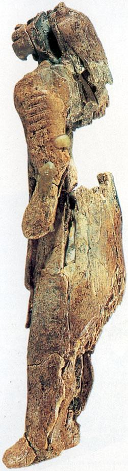

Mother and Child

Height 28 cm, about 6 cm diameter. Made of mammoth ivory. Found in the cave of Hohlenstein-Stadel in the Valley of
Lone, Baden-Wurttemberg (Germany), in 1931. Dated as Aurignacian, in a 32 000 year old level.

Back to Pictures
Back to main page